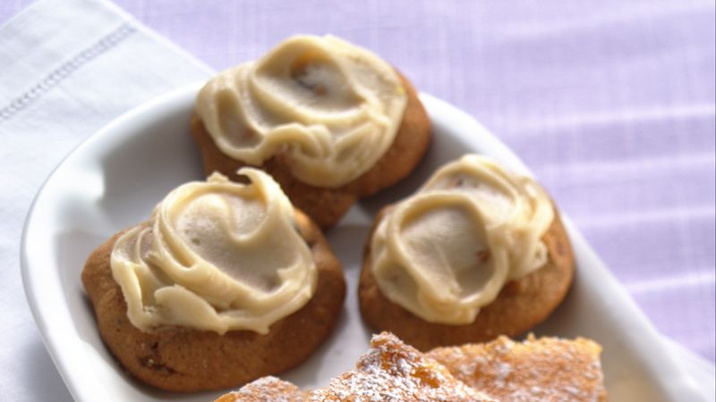

Applesauce Jumbles

Description
Mom's Applesauce Jumble cookies are super soft and delicious and are sure to be a hit at any event! A holiday classic in our family!
- Prep20 min
- Cook10 min
- Total30 min
- Yieldsabout 4-5 dozen
Ingredients
Cookie
- 2 ¾ cups all-purpose flour
- 1 ½ cups packed brown sugar
- 1 teaspoon salt
- ½ teaspoon baking soda
- ¾ cup applesauce
- ½ cup shortening
- 2 eggs
- 1 teaspoon ground cinnamon
- 1 teaspoon vanilla
- ¼ teaspoon ground cloves
- 1 cup raisins
- 1 cup chopped nuts (optional)
Browned Butter Glaze:
- ⅓ cup butter or margarine
- 2 cups powdered sugar
- 1 ½ teaspoons vanilla
- 2-4 tablespoons hot water
Directions
- Mix all cookie ingredients in a bowl.
- If dough is soft, cover and refrigerate.
- Heat oven to 375 degrees, drop dough by rounded tablespoonfuls about 2 inches apart onto un-greased cookie sheet.
- Bake until almost no indentation remains when touched, about 10 minutes.
- Immediately remove from cookie sheet.
- Cool; spread with brown butter glaze.
Brown Butter Glaze:
- Heat butter or margarine over low heat until golden brown; remove from heat.
- Stir in powdered sugar and vanilla.
- Beat in hot water until smooth and of desired consistency.